shop - A Shopping List Website
The shop website allows any number of people - with web access - to manage the same shopping list.
-
shop is a LAMP (Linux, Apache, MySQL and PHP) application,
so it must be hosted on a web server.
-
Download shop from github.
-
Your data is stored on your web server, so no third party has access to it.
I.e., your data shouldn't be mined to sell you stuff you don't want.
-
shop is designed to be used on any size screens - including smartphones.
- Update your shopping list whenever the web is accessible, including while you shop.
-
See which items were added/removed from the list, how much/many, when, and by whom.
-
Define username(s), item descriptions, units, categories and (optionally) notes.
-
A modicum of database knowledge is required to implement this website.
-
Shell command line interface (CLI) access to your web server and the database
would be helpful.
-
Constructive feedback to improve the functionality, security or appearance of this
website is welcome. Web site aesthetics is not my forté, so if anyone is keen to make
shop look pretty, please let me know.
This website (the one you're reading now) has both wide and narrow screen shots.
Rest assured, shop works very well on a smartphone!
Here are some screen shots that show how shop can be used.
Login Page
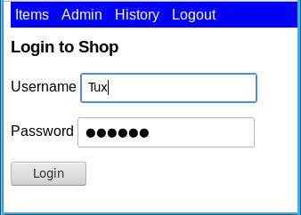
The login page. Select anything but Logout to login.
Shopping List "Sorted by Quantity"
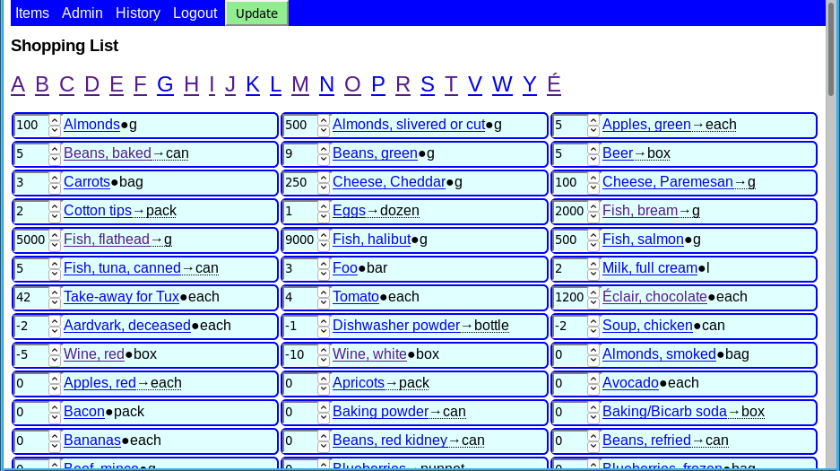
After logging in, the Items page is displayed. Scroll up/down through the entire shopping list.
This image shows the default sort order, "by quantity" (q) [see sort order].
Note: Negative quantity values are used for items that are required,
but not urgently; buy them on sale!
Shopping List "Sorted by Category, then Quantity"

This is the Items page again, but this time it's sorted "by category, then quantity" (cq) [see sort order].
Beginning with '<letter>' Pages - Wide Screen
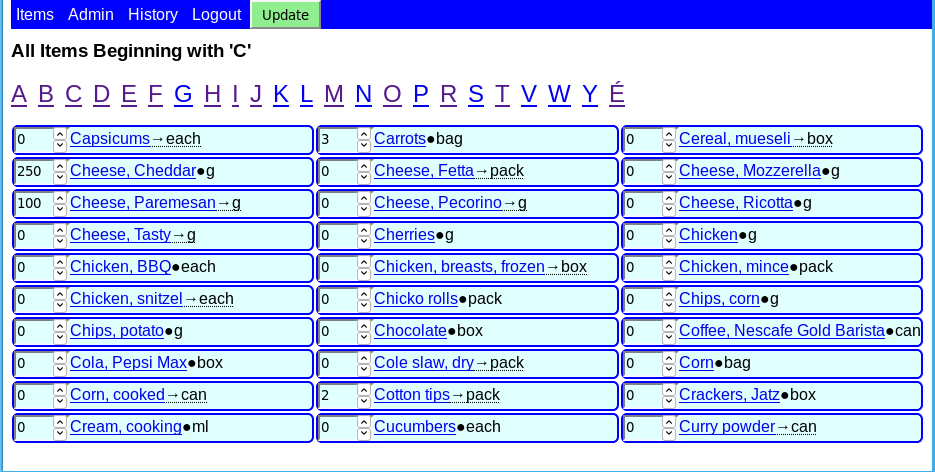
It can be faster and/or easier to find items by using the "Beginning with '<letter>' pages"
links at the top. These pages are always sorted alphabetically.
Beginning with '<letter>' Pages - Narrow Screen
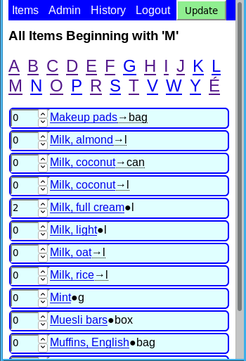
A "Beginning with '<letter>' page" as it would appear on a small screen (e.g., a smartphone).
Admin Page (top part)
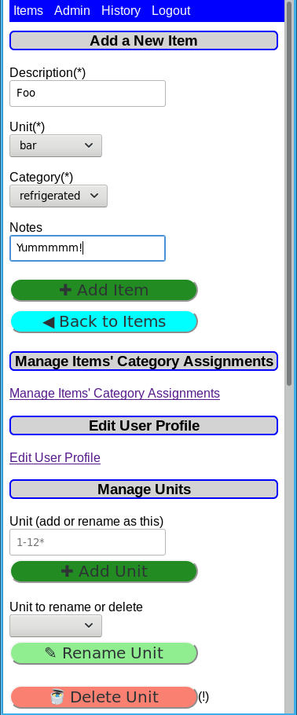
The Admin page (top part shown) is where:
-
Items can be added
-
A link to the page where items' category assignments are most easily checked and managed
-
A link to the user profile management page
-
Units can be managed
Admin Page (bottom part)
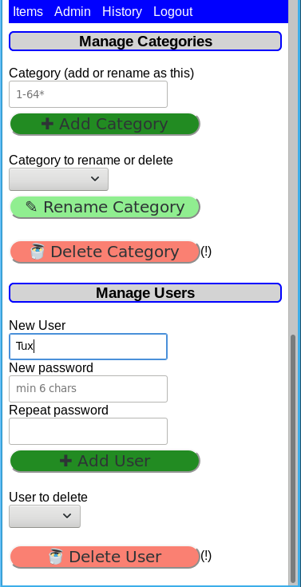
The Admin page (bottom part shown) is where:
-
Categories can be managed
-
Users can be managed
The expectation is that only the top part of the Admin page will be used often - to add
new items. The functions below that should be rarely after initial configuration.
Managing Your User Profile
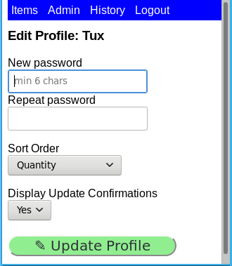
On this page:
-
A user can change their own password.
-
Select the Items page [sort order].
-
Toggle whether or not an update confirmation page like this one:
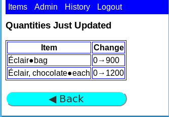
appears after update(s) are made.
Display the Quantity Changes History
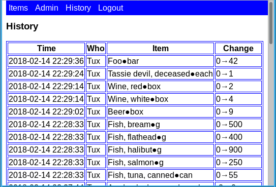
The History page shows the most recent item quantity changes. The intent is to record
when items were required (and how many) and when they were purchased (and how many).
Displaying Category or Notes by Hovering
Note: Hovering cannot normally be made to work on touch screen devices.
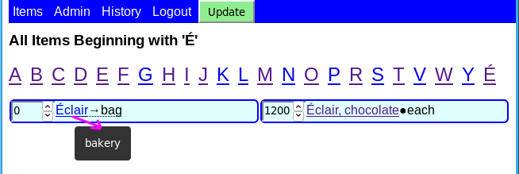
Hovering over the item's description will display that item's category.
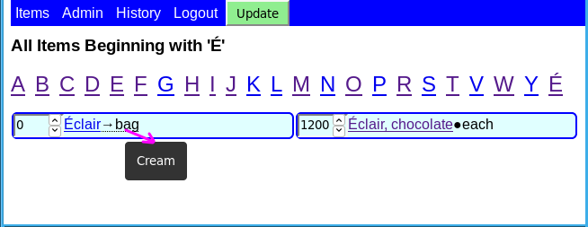
Items with (text) notes are displayed with a small right arrow (→) between the
description and the unit.
Hovering over the item's unit will display that item's notes.
Items without notes have a black circle (●) separating their description and unit.
Changing an Item
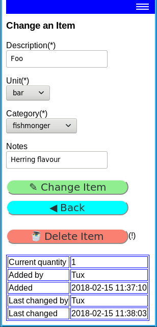
Clicking on an item (when it's a hyperlink) displays the "Change an Item" page where one
may change any aspect of it: description, unit, category or (optional) notes.
(The screen has to be very narrow to display the hamburger menu!)
Sort Order
Note: "sorting by quantity" is always done based on the sign of the quantity
(positive, zero or negative). That is, for purposes of "sorting by quantity", 5 and 55 are the same
- because they are both positive.
There are three ways to sort the Items page:
- "By quantity" (q) - the default sort order:
- items with positive quantities (if any)[1]
- items with negative quantities (if any)[1]
- items with zero quantities (if any)[1]
- "By category then by quantity" (cq):
- Each category in turn (in alphabetical order) with at least one non-zero quantity (if any)
- Items with positive quantities (if any)[1]
- Items with negative quantities (if any)[1]
- By items with zero quantities (if any)[1]
- Alphabetically (a)[1]
[1] Then, alphabetically by description, then alphabetically by unit.
Technical Details
-
shop is written entirely in PHP using OOP, PDO and uses a responsive design.
-
Web server(s) other than Apache and/or database(s) other than MySQL could presumably
be used. (But that would run foul of the LAMP acronym!)
-
These things have been done with the aim of making the shop website more secure:
- All database queries (CRUD) use prepared statements (SQL injection).
- Ubiquitous use of htmlspecialchars (XSS)
- The database access details are stored outside the web server document root.
But, in any case, there should be no sensitive information in this database. The worst
case is someone finds out how many carrots you buy.
-
Two trivial helper shell scripts have been provided to generate the MySQL statements:
-
generate_CREATE_SQL: generates CREATE TABLE MySQL statements for the 5 shop
database tables.
-
generate_SELECT+LOAD_SQL: generates MySQL statements to extract the data from the
5 shop database tables and the statements to load the data.
-
shop has been tested with PHP 7.1.
-
The relatively new CSS grid layout feature has been used so the alphabetical sorting is
more usable. This may not work on older browsers. If it becomes an issue, allowing the
option of displaying items in the order that <article> ... </article> orders
them could be used (as was the case in v0.0.0).
Notes
-
The "new" CSS Grid Layout
module is used to display items in a more usable and natural order. Internet Explorer
(IE) does not support the latest version of Grid Layout (which is still a
"W3C Candidate Recommendation"). So, IE does not render the shop web site properly.
It would be possible to implement a different solution, but as IE seems to be a dying
browser, the decision - for now - is to use a different browser. Only IE is known to
have this limitation.
-
The first character of item descriptions are forced to be upper case.
-
The update button on the menu bar only appears on screens where it would be useful.
-
Possible features to add:
-
A new shopping_list key field to allow management of multiple separate lists.
E.g., grocery, hardware, personal vs work, etc.
-
A client key field to allow multiple different people's lists to exist in the same
database tables. Sort of a µbureau. But that's a 3rd party, right?!? This is
for your non-technical friends who can't run their own LAMP site.
-
a barcode scanner feature to add new items. But, where does this data come from?
-
Every attempt has been made to adopt "best practices" - which presupposes there is some
sort of consensus on a particular topic - which is often not the case! Please let me know if
I have fallen short of "best practice" in some egregious manner, and I'll try to sort it.